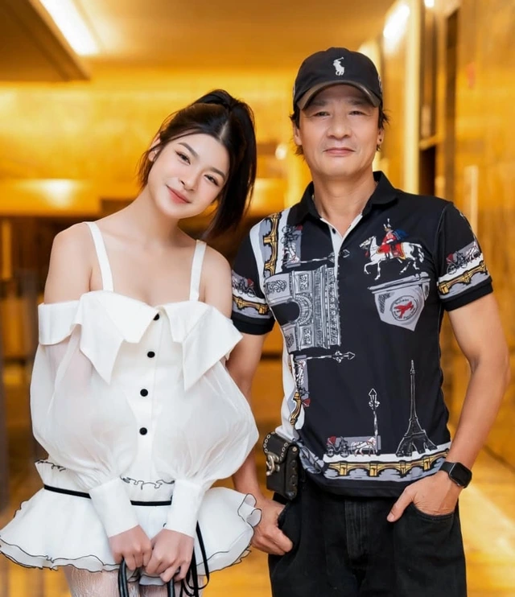
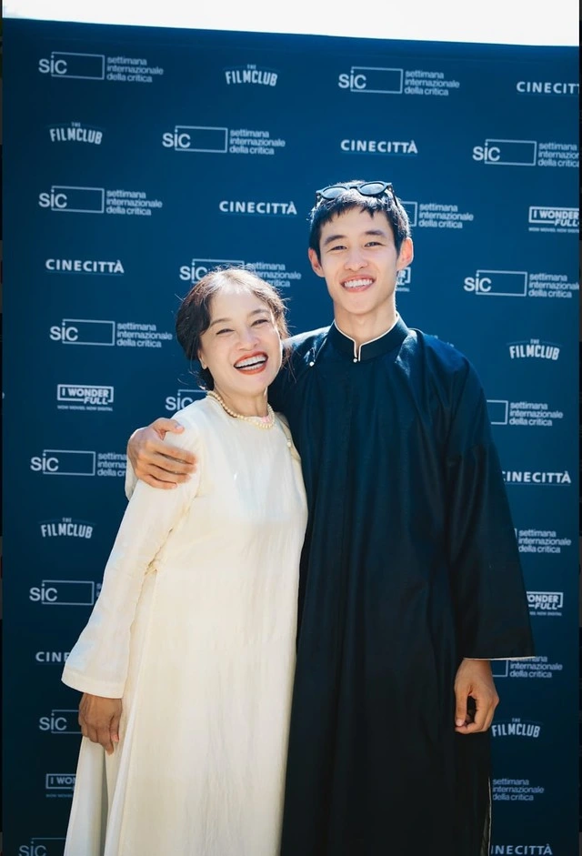

Chuyện 'con nhà nòi' đóng phim
Gần đây, nhiều diễn viên trẻ là con của các nghệ sĩ nổi tiếng tham gia đóng phim, đang thu hút sự chú ý của khán giả.

Người thầy tại gia
Diễn viên Long Vũ, con trai của nghệ sĩ Vân Dung, đang "gây bão" với vai nam chính trong phim truyền hình Đi giữa trời rực rỡ. Trước đó, Long Vũ đóng một số vai phụ trong Cuộc chiến không giới tuyến, Không ngại cưới chỉ cần một lý do. Có thể thấy anh diễn rất tự nhiên, nét diễn có chút gì đó "tưng tửng", dí dỏm rất giống mẹ anh. Theo chia sẻ của nghệ sĩ Vân Dung, sau khi đọc kịch bản, ở 10 tập đầu của Đi giữa trời rực rỡ, chị đã góp ý giúp con trai tư duy vai diễn để tạo được nét riêng.
Trong phim Hoa sữa về trong gió của đạo diễn Bùi Tiến Huy đang phát sóng, diễn viên trẻ Võ Hoài Anh lần đầu đóng phim với vai diễn khá nặng về tâm lý. Nữ diễn viên sinh năm 2005 cho biết: "Tôi rất may mắn khi có người thầy trong chính ngôi nhà của mình. Ba dạy cho tôi cách học lời thoại và thoại thế nào để người ta cảm nhận đó là từ lời bên trong của mình nói ra. Một diễn viên giỏi là diễn như không diễn. Tôi luôn nhớ điều này để áp dụng cho bản thân". Võ Hoài Anh là con gái của NSƯT Võ Hoài Nam. Cô hiện là sinh viên thanh nhạc.
NSƯT Võ Hoài Nam còn có con trai Võ Hoài Vũ cũng đang đóng vai phụ trong Đi giữa trời rực rỡ. Nói về việc định hướng cho các con theo diễn xuất, NSƯT Võ Hoài Nam chia sẻ: "Diễn viên thì rất cần cảm xúc để hóa thân vào nhân vật, bởi khi có cảm xúc thật thì sẽ diễn đạt thật. Mà muốn có cảm xúc thật, lại cần rất nhiều vốn sống. Cái này đương nhiên các con còn thiếu nhiều nên cần phải tích lũy. Tôi không định hướng cho các con, mà chỉ ủng hộ hết khả năng của mình.
Rất may mắn là các con yêu thích nghề của cha từ nhỏ, mình cứ lẳng lặng theo dõi thôi".
Ở phim điện ảnh Mưa trên cánh bướm, lần đầu tiên con trai của nghệ sĩ Tú Oanh và đạo diễn Bùi Thạc Chuyên là Bùi Thạc Phong tham gia diễn xuất.
Nhận xét về Bùi Thạc Phong, đạo diễn Dương Diệu Linh cho biết: "Từ khi được chọn cho vai diễn, Phong liên tục trao đổi, mổ xẻ từng chi tiết nhỏ nhất về nhân vật, những đấu tranh nội tâm thậm chí còn không có trong kịch bản. Những câu hỏi của Phong kỹ lưỡng đến mức nhiều lúc khiến tôi phải… toát mồ hôi. Phong là một diễn viên có nội lực và sự nghiêm túc tuyệt đối với bộ môn nghệ thuật mà bạn theo đuổi".
Nhiều áp lực và không đặc cách
Có thể thấy các diễn viên "con nhà nòi" vẫn bắt đầu từ những vai phụ, vai nhỏ nhất mà không có bất cứ sự đặc cách nào dù có bố, mẹ là những nghệ sĩ gạo cội, nổi tiếng trên màn ảnh Việt.
Diễn viên Gia Bảo, con trai của NSND Công Lý và MC Thảo Vân, tập tành đóng phim từ một vai rất nhỏ trong Sao Kim bắn tim Sao Hỏa. Theo chia sẻ của MC Thảo Vân, dù con trai chỉ đóng vai nhỏ nhưng tự chủ động chuẩn bị về trang phục, xin tiền mẹ để đi làm tóc cho phù hợp với vai diễn. Gia Bảo cũng cho biết anh đã tự đi xin thử vai với đạo diễn Bùi Quốc Việt để học hỏi, lấy kinh nghiệm.
Nói về sự đặc cách đối với diễn viên "con nhà nòi", đạo diễn Bùi Tiến Huy thẳng thắn: "Để được chọn, Hoài Anh vẫn phải casting như các diễn viên khác dù là con gái của NSƯT Võ Hoài Nam. Khoảng 10 ngày đầu, ngày nào anh Võ Hoài Nam cũng đưa con đến phim trường. Anh không gửi gắm gì mà chỉ ngại, kiểu sợ con gái mình chưa đóng phim bao giờ, sợ ảnh hưởng đến đoàn phim, sợ diễn không được. Trước mỗi phân đoạn, anh đều đọc kịch bản, phân tích cùng con gái. Sau đó, anh trao đổi với đạo diễn để làm sao con có diễn xuất tốt nhất. Nhờ anh Võ Hoài Nam mà Hoài Anh mới hòa nhập với đoàn phim nhanh như thế, diễn xuất cũng rất tự nhiên".
Còn theo chia sẻ của nghệ sĩ Tú Oanh, đến ngày gặp mặt các diễn viên trước khi quay Mưa trên cánh bướm thì Bùi Thạc Phong mới biết mẹ đóng vai chính. Bởi trước đó nghệ sĩ Tú Oanh đã dặn đạo diễn và đoàn phim không tiết lộ với con trai vì sợ Phong cảm thấy áp lực. 
Đạo diễn Bùi Tiến Huy nhận định: "Các bạn diễn viên con nhà nòi có một lợi thế là được tiếp xúc với nghệ thuật từ bé nên cảm nhận nghệ thuật tốt hơn và tố chất này hình thành từ rất sớm. Tuy vậy, các bạn sẽ có một khó khăn với diễn viên có xuất phát điểm bình thường, đó là chịu áp lực rất nhiều từ cái bóng quá lớn của bố mẹ mình. Nếu các bạn không vượt qua được áp lực này thì sẽ khó thành công".